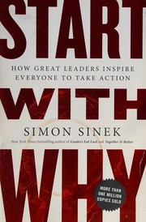
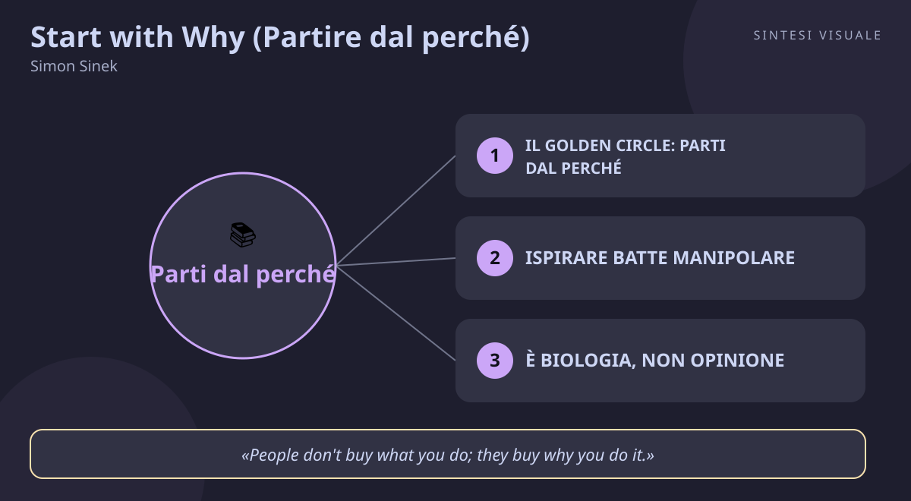

Home / Libri / Start with Why (Partire dal perché)

Start with Why (Partire dal perché)
Simon Sinek · Carriera e leadership
«Start with Why (Partire dal perché)»
- Golden Circle
- Ispira non manipolare
- Legge della diffusione
- Chiarezza disciplina coerenza
🧭Introduzione
Simon Sinek, autore e consulente organizzativo britannico-americano, nel 2009 tiene un intervento al TEDxPugetSound che diventa uno dei TED Talk più visti di sempre (oltre 60 milioni di visualizzazioni): lì presenta per la prima volta il "Golden Circle". Nello stesso anno pubblica da Portfolio/Penguin Start with Why (256 pagine), bestseller internazionale tradotto in tutto il mondo — in Italia come Partire dal perché (Franco Angeli). La domanda che lo tormentava era semplice: perché Apple innova anno dopo anno pur avendo accesso agli stessi talenti e consulenti dei concorrenti? Perché Martin Luther King ha guidato un movimento pur non essendo l'unico grande oratore del suo tempo? Perché i fratelli Wright hanno battuto team più finanziati e qualificati nella corsa al volo a motore?
Perché conta oggi: sul lavoro e nel business siamo sommersi di "cosa" e "come" — funzioni, prezzi, specifiche — mentre le persone scelgono, restano e si appassionano per il "perché". Che tu debba guidare un team, vendere un prodotto, cambiare carriera o semplicemente farti seguire da un'idea, questo libro ti dà il framework più semplice e citato degli ultimi vent'anni per ispirare invece di forzare.
A chi è utile: a manager e imprenditori che vogliono collaboratori fedeli e non solo stipendiati; a freelance e venditori stanchi di competere solo sul prezzo; a chi sceglie lavoro o carriera e vuole capire cosa lo accende davvero; a chiunque debba presentare un'idea e far venire voglia di seguirla.
📘Riassunto
La scintilla centrale: alcuni leader e aziende ispirano fedeltà e risultati ripetibili mentre altri, a parità di risorse, arrancano — e la differenza non sta in cosa fanno o come lo fanno, ma nel fatto che partono dal perché (scopo, causa, convinzione) invece che dal cosa.
La struttura logica ruota intorno al Golden Circle, tre cerchi concentrici — WHY al centro, HOW in mezzo, WHAT all'esterno — declinato in passaggi chiave:
- Manipolazione contro ispirazione: esistono solo due modi per influenzare il comportamento umano. Le manipolazioni (sconti, promozioni, paura, aspirazioni tipo "diventa ricco in sei settimane", pressione sociale, novità) funzionano e alzano le vendite — ma producono transazioni, non fedeltà. L'ispirazione produce lealtà: clienti che pagano di più e dipendenti che restano.
- Il Golden Circle: quasi tutti sanno COSA fanno, alcuni sanno COME lo fanno, pochissimi sanno PERCHÉ lo fanno (e il perché non è "fare soldi": quello è un risultato). Le aziende comuni comunicano dall'esterno all'interno ("facciamo ottimi computer, sono belli e facili: vuoi comprarne uno?"); quelle che ispirano dall'interno all'esterno, come Apple: "in tutto ciò che facciamo crediamo nel mettere in discussione lo status quo: progettiamo prodotti bellissimi e facili da usare; ci capita di fare ottimi computer. Vuoi comprarne uno?".
- Non è un'opinione, è biologia: il Golden Circle ricalca il cervello — la neocorteccia (WHAT) governa pensiero razionale e linguaggio, il cervello limbico (WHY e HOW) governa emozioni, fiducia e decisioni ma non ha linguaggio. Per questo diciamo "mi sembra giusto" senza saperlo spiegare, e per questo la logica giustifica le decisioni, ma sono le emozioni a prenderle.
- Chiarezza, disciplina e coerenza: il cerchio funziona solo se è in equilibrio — chiarezza sul PERCHÉ, disciplina nel COME (valori-guida vissuti davvero), coerenza nel COSA (tutto ciò che dici e fai dimostra ciò in cui credi).
- La legge della diffusione: innovatori (2,5%) e primi adottanti (13,5%) comprano il perché; la maggioranza arriva solo dopo il punto di svolta del 15-18%. Non puntare a chi ha bisogno di ciò che vendi, ma a chi crede in ciò in cui credi.
- Serve anche il COME: i visionari del PERCHÉ (tipo-WHY, ottimisti che vedono ciò che altri non vedono) devono allearsi con i concreti del COME (tipo-HOW, che trasformano la visione in percorso). E il PERCHÉ non si inventa guardando avanti: si scopre guardando indietro, nella storia delle origini.
Il punto di svolta: il capitolo sulla biologia, dove il lettore capisce che comunicare il perché non è retorica motivazionale ma parlare direttamente alla parte di cervello che decide e fidelizza — e che "conquistare i cuori e le menti" (in quest'ordine, dice Sinek) non è un modo di dire: è un'istruzione neurologica.
L'eredità oggi: il Golden Circle è entrato nei corsi delle business school, nei pitch delle startup e nei manuali di marketing di mezzo mondo; il TED Talk del 2009 resta tra i più visti della storia e l'idea "la gente non compra cosa fai, compra perché lo fai" è diventata il test con cui aziende e professionisti misurano i propri messaggi — dal curriculum al lancio di prodotto.
💡Concetti chiave
- Il Golden Circle: parti dal PERCHÉ, poi COME, poi COSA — chi ispira comunica dall'interno all'esterno, al contrario di tutti gli altri.
- Ispirare batte manipolare — sconti, promozioni, paura e pressione sociale vendono oggi ma non creano fedeltà domani.
- È biologia, non opinione — il perché parla al cervello limbico che decide; il cosa parla alla neocorteccia che giustifica dopo.
- Chiarezza, disciplina, coerenza — il cerchio funziona solo in equilibrio: scopo chiaro, valori vissuti, azioni che lo dimostrano.
- La legge della diffusione: cerca chi ci crede — conquista il primo 15-18% di convinti e la maggioranza seguirà; non vendere a chi ha bisogno, ma a chi condivide.
- Il PERCHÉ si scopre, non si inventa — nasce dalla tua storia passata, e ha bisogno di un alleato concreto (il COME) per diventare realtà.
📖1. Il Golden Circle: parti dal PERCHÉ, poi COME, poi COSA
- Definizione tre cerchi concentrici — WHY (scopo, causa, convinzione: perché esisti e perché dovrebbe importare a qualcuno), HOW (i principi e processi che ti rendono diverso), WHAT (prodotti, servizi, risultati). Quasi tutti comunicano dall'esterno all'interno (dal chiaro al vago); i leader che ispirano fanno il percorso inverso, sempre.
- Esempio due venditori di computer. Il primo: "Facciamo computer ottimi, ben progettati e facili da usare. Ne vuoi uno?". Il secondo (Apple secondo Sinek): "Noi crediamo nel mettere in discussione lo status quo e nel pensare diversamente. Lo facciamo con prodotti bellissimi e facili da usare. Ci capita di fare ottimi computer. Ne vuoi uno?". Stesse informazioni, ordine inverso — e il secondo ti fa venire voglia di comprare.
- Come applicarlo (a) scrivi in una frase il tuo perché, senza nominare prodotti, soldi o funzioni ("credo che..."); (b) prima di ogni presentazione, email di vendita o colloquio, apri con il perché e chiudi con il cosa; (c) verifica ogni messaggio: se togli il nome dell'azienda e potrebbe averlo scritto chiunque, manca il perché.
- Errore comune confondere il perché con il risultato ("il nostro perché è crescere del 20%" o "fare soldi") — quello è un cosa travestito; oppure mettere il perché solo nello slogan e poi parlare solo di caratteristiche e prezzi.
- Collegamento lo storytelling di Made to Stick dei fratelli Heath (il "nocciolo" semplice che resta in testa); nel marketing moderno, il "purpose-driven branding" ne è l'erede diretto.
📖2. Ispirare batte manipolare
- Definizione manipolare significa spingere all'acquisto con leve esterne — calo di prezzo, promozioni, paura ("se non compri rischi..."), aspirazioni ("perdi 7 chili in 7 giorni"), pressione sociale, novità. Funziona, ma genera solo transazioni. Ispirare significa dare alle persone un motivo legato alle loro convinzioni: genera fedeltà, ovvero clienti che rifiutano offerte migliori e dipendenti che non scappano al primo aumento altrove.
- Esempio il Black Friday ti fa comprare un televisore che non ti serviva perché costa il 40% in meno — ma il mese dopo compreresti da un altro se costasse ancora meno. Al contrario, chi compra Harley-Davidson o Apple paga di più e aspetta mesi: non ha comprato un prodotto, ha comprato un'appartenenza.
- Come applicarlo (a) elenca le leve con cui vendi o motivi oggi e segna quali sono manipolazioni (sconto, urgenza, paura); (b) per ciascuna, affianca un messaggio di ispirazione (a quale convinzione del cliente/dipendente parli?); (c) misura la fedeltà, non solo la transazione: riacquisti, referral, candidature spontanee.
- Errore comune demonizzare le promozioni e abolirle — Sinek non dice che sono male, dice che non bastano: vanno bene per vendere oggi, ma la fedeltà si costruisce solo con il perché; oppure credere che "ispirare" significhi fare discorsi enfatici invece di avere uno scopo vero.
- Collegamento Le armi della persuasione di Cialdini (che descrive leve simili — scarsità, riprova sociale — e spiega perché funzionano a breve termine); la distinzione di Daniel Pink in Drive tra motivazione estrinseca e intrinseca.
📖3. È biologia, non opinione
- Definizione la neocorteccia, la parte esterna del cervello, gestisce pensiero razionale, analisi e linguaggio — corrisponde al WHAT. Il cervello limbico, interno, gestisce emozioni, fiducia, lealtà e decisioni — corrisponde a WHY e HOW — ma non controlla il linguaggio. Quindi sentiamo la decisione ("mi fido", "mi sembra giusto") e solo dopo la giustifichiamo con fatti e parole.
- Esempio scegli un ristorante "a pelle" perché l'ambiente ti ispira fiducia, e poi spieghi la scelta dicendo "le recensioni erano buone" — la decisione è partita dal limbico, la giustificazione dalla neocorteccia. Lo stesso accade quando un cliente non sa spiegare perché preferisce un marchio: "non so, mi piace di più".
- Come applicarlo (a) quando devi convincere (capo, cliente, partner), prima tocca emozioni e valori con una storia o una convinzione, poi porta i dati come prova; (b) quando decidi tu e "senti" che è giusto ma non sai spiegarlo, non ignorare il segnale: cerca i fatti che lo confermano o lo smentiscono; (c) nei colloqui e nelle trattative, ascolta le emozioni dietro le parole: lì si gioca la decisione.
- Errore comune sommergere di dati chi deve ancora fidarsi — senza fiducia limbica, i dati rimbalzano; oppure, all'opposto, fidarsi solo della pancia senza mai verificare con i fatti.
- Collegamento Pensieri lenti e veloci di Kahneman (Sistema 1 emotivo e Sistema 2 razionale: stessa architettura, altro vocabolario); L'intelligenza emotiva di Goleman sul primato delle emozioni nelle decisioni.
📖4. Chiarezza, disciplina, coerenza
- Definizione i tre pilastri che tengono il Golden Circle in equilibrio. Chiarezza del PERCHÉ: saperlo dire in parole semplici. Disciplina del COME: attenersi ogni giorno ai valori e principi che incarnano quel perché (Sinek raccomanda di esprimerli come verbi — non "integrità" ma "fai sempre la cosa giusta"). Coerenza del COSA: tutto ciò che dici, fai e vendi deve dimostrare ciò in cui credi, senza eccezioni visibili.
- Esempio un'azienda che dichiara "le persone prima di tutto" ma taglia la formazione al primo trimestre difficile ha rotto la coerenza del COSA: dipendenti e clienti registrano la contraddizione e la fiducia crolla. Al contrario, Southwest Airlines che rinuncia a servizi extra per restare low-cost dimostra ogni giorno il proprio perché con fatti coerenti.
- Come applicarlo (a) scrivi il tuo perché in una frase e tre valori-verbo che lo incarnano; (b) fai l'audit di una settimana: ogni decisione importante dimostra quei valori o li contraddice?; (c) elimina una sola incoerenza visibile (quella che tutti notano e nessuno nomina).
- Errore comune appendere i valori al muro e poi premiarli a parole ma punirli nei fatti (premiare chi fa straordinari infiniti mentre dichiari "equilibrio vita-lavoro"); oppure cambiare perché a ogni cambio di strategia, confondendo scopo e piano.
- Collegamento Atomic Habits di Clear ("ogni azione è un voto per il tipo di persona che vuoi essere": la coerenza costruisce identità); la fiducia come valuta di cui parla anche Stephen Covey in Le 7 regole per avere successo.
📖5. La legge della diffusione: cerca chi ci crede
- Definizione ripresa da Everett Rogers, la curva dell'adozione divide le persone in innovatori (2,5%), primi adottanti (13,5%), maggioranza anticipatrice (34%), maggioranza ritardataria (34%) e ritardatari (16%). Il mercato di massa scatta solo dopo il punto di svolta del 15-18%: i primi adottanti comprano ciò in cui credono e sopportano disagi e prezzi alti; la maggioranza compra ciò che è già stato provato da altri. Obiettivo: non convincere tutti, ma trovare i primi che condividono il tuo perché.
- Esempio lanci un corso online e invece di fare sconti a tutti, lo proponi a 20 persone che già ti seguono per le tue idee: lo comprano a prezzo pieno, lo finiscono, lo consigliano — e con le loro testimonianze la maggioranza arriva da sola. Oppure in azienda: per introdurre un nuovo metodo, parti dai due colleghi curiosi, non dai resistenti.
- Come applicarlo (a) identifica i tuoi "primi adottanti": chi ti ha già scelto per le tue idee, non per il prezzo?; (b) parla a loro, chiedi feedback e testimonianze, sopporta che la maggioranza all'inizio ignori; (c) non abbassare prezzo e livello per convincere gli scettici: aspetta il punto di svolta.
- Errore comune corteggiare subito la maggioranza con sconti e rassicurazioni — bruci margini e non ottieni fedeltà; oppure scoraggiarsi perché "solo" il 10% ha aderito, quando sei a un passo dal punto di svolta.
- Collegamento The Tipping Point di Malcolm Gladwell (il "punto critico" oltre cui le idee dilagano); il concetto di "minimo pubblico sostenibile" nel marketing delle community.
📖6. Il PERCHÉ si scopre, non si inventa
- Definizione il perché non nasce da ricerche di mercato, brainstorming sul futuro o frasi d'effetto: si trova guardando indietro, nelle esperienze formative e nella storia delle origini — è ciò che ti ha mosso quando hai iniziato, prima del successo. Inoltre i tipi-WHY (visionari che vedono ciò che altri non vedono) raramente sanno eseguire: hanno bisogno di un tipo-HOW al fianco che trasformi la visione in percorso concreto.
- Esempio i fratelli Wright non avevano soldi né titoli, ma avevano una causa (il sogno del volo) che attirava volontari appassionati; Samuel Langley, finanziatissimo dal governo, mollò tutto dopo la prima sconfitta — gli mancava il perché. E dietro ogni visionario c'è un esecutore: senza chi sa il COME, il PERCHÉ resta un bel discorso.
- Come applicarlo (a) ripercorri tre momenti in cui ti sei sentito più vivo e utile al lavoro: cosa li accomuna? Lì vive il tuo perché; (b) scrivilo come contributo ("per dare/costruire... a..."), non come ambizione ("per diventare leader di mercato"); (c) trova il tuo tipo-HOW complementare (o viceversa): chi trasforma le tue idee in piani — o di chi sei il braccio operativo.
- Errore comune inventarsi un perché "fico" perché suona bene sul sito — dura fino alla prima difficoltà; oppure voler fare tutto da soli: il visionario senza esecutore predica, l'esecutore senza visione ottimizza il vuoto.
- Collegamento L'uomo in cerca di senso di Frankl (il senso si trova, spesso nel passato e nella sofferenza, non si fabbrica); il binomio visionario-integratore di Traction di Gino Wickman.
💬Citazioni da ricordare
"People don't buy what you do; they buy why you do it." — La frase-simbolo del libro (e del TED Talk del 2009): conta perché sposta la competizione dalle caratteristiche al significato, dove il prezzo smette di essere l'unico argomento.
"There are only two ways to influence human behavior: you can manipulate it or you can inspire it." — Conta perché ti costringe a un esame onesto: sto convincendo con uno scopo condiviso o sto spingendo con leve di breve periodo?
"Leading is not the same as being the leader. Being the leader means you hold the highest rank... Leading, however, means that others willingly follow you — not because they have to, not because they are paid to, but because they want to." — Conta perché definisce la leadership come scelta degli altri, non come posizione: il test è se ti seguirebbero anche senza stipendio e gerarchia.
🌍Esempi di oggi
- Il freelance che non fa sconti e ha la fila fuori. Due grafici con lo stesso portfolio: uno compete sui prezzi su ogni preventivo, l'altro apre ogni call con "credo che i piccoli brand meritino un'immagine da grandi" e mostra solo lavori coerenti con quella causa. Il secondo costa il doppio e ha lista d'attesa: i clienti non hanno comprato ore di lavoro, hanno comprato un perché in cui si riconoscono.
- La riunione in cui il capo parte dai numeri e perde tutti. "Dobbiamo tagliare i costi del 12%" (WHAT) genera resistenza muta; lo stesso capo che apre con "siamo qui per rendere questo servizio accessibile a tutti, e per farlo dobbiamo diventare più leggeri" (WHY) ottiene idee invece di musi lunghi. Stesso obiettivo, ordine inverso — e il cervello limbico del team decide se collaborare prima ancora di sentire i dettagli.
- Il cambio di carriera spiegato (male) ai parenti. "Lascio il posto fisso per aprire una micro-torrefazione" suona folle finché lo racconti dal COSA; diventa inevitabile quando parti dal PERCHÉ: "credo che il quartiere meriti un posto dove la gente si incontra davvero, il caffè è solo il mezzo". Chi condivide quel perché — clienti, soci, perfino i parenti — ti segue; gli altri non erano comunque i tuoi primi adottanti.
🛠️Azioni pratiche
- Scrivi il tuo PERCHÉ in una frase senza nominare prodotti, ruoli o soldi ("io credo che... / esisto professionalmente per..."), poi usala per aprire la prossima email, call o colloquio in cui devi convincere qualcuno.
- Fai l'audit delle tue manipolazioni: elenca tre leve con cui spingi gli altri o te stesso (sconto, urgenza, senso di colpa, "lo fanno tutti") e per ciascuna scrivi il messaggio-ispirativo alternativo legato a una convinzione condivisa.
- Trova i tuoi primi adottanti: individua tre persone che già credono in ciò in cui credi (clienti, colleghi, amici) e coinvolgile per prime nella tua prossima idea — feedback, testimonianza o semplice passaparola — invece di inseguire gli scettici.
💎Da portare a casa
Non farti seguire per ciò che fai, ma per il motivo per cui lo fai: il resto è solo la prova.
Vuoi scavare più a fondo? Rispondi con il numero di un concetto (1–6) e lo espando con altri esempi ed esercizi — oppure chiedimi pure di un tema collegato: leadership, vendite senza sconti, motivazione dei collaboratori, personal branding, gestione del cambiamento.
🖼️In un colpo d’occhio

Tocca l’immagine per ingrandirla.